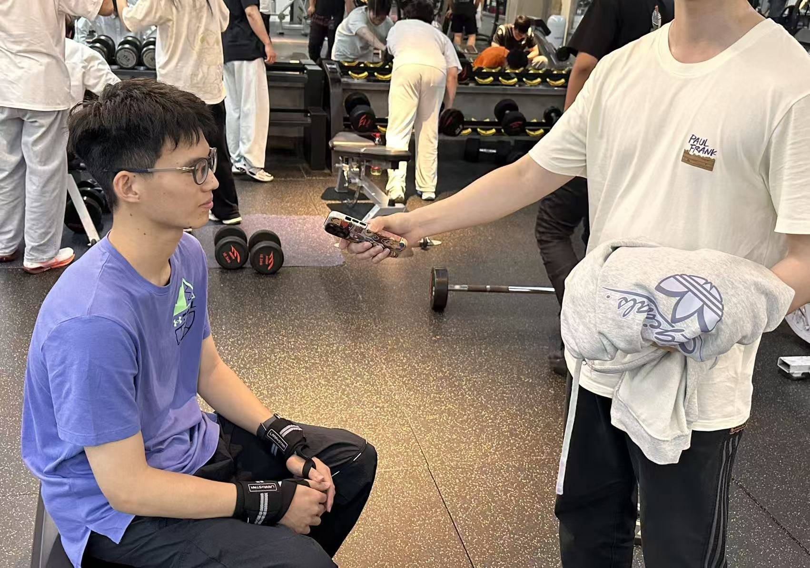
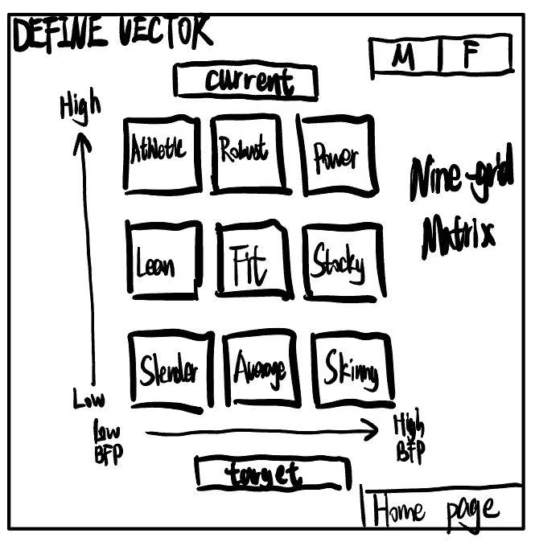

01. Motivation & Research
Our team chose the Active Track because we recognized a fundamental gap in how fitness is approached within university environments like XJTLU. While students are health-conscious, the "Active" lifestyle often remains unoptimized due to scientific data opacity. We chose this track specifically to leverage software engineering to provide real-time, actionable insights that traditional methods overlook. By focusing on Active technology, we can address "gym anxiety" and "training plateaus" that often lead to high dropout rates among beginners. Our platform ensures that physical activity is purposeful, data-driven, and engaging. We believe that by creating a scientific feedback loop—using MET calculations and real-time occupancy tracking—we can empower students to move from intuitive training to precise, high-performance habits. Ultimately, the Active Track allowed us to explore the intersection of HCI and Sports Science, creating a digital coach that fosters a healthier, more informed, and scientifically-active campus community.
Paper 01: Lyons et al. [1]
- ✔ Proved self-monitoring is the most effective behavior change technique.
- ✔ Validated electronic lifestyle monitors for improving adherence.
- ✔ Established data tracking as a core motivator for activity.
- ✖ Ignored the high cognitive load during complex goal setting.
- ✖ Missing empathetic UI for fitness beginners.
- ✖ Failed to link personal data with physical environment dynamics.
Paper 02: Haynes [2]
- ✔ Identified how prolonged decision time impacts user satisfaction.
- ✔ Minimized cognitive effort through choice boundary testing.
- ✔ Optimized selection loops for better engagement.
- ✖ Failed to account for spatial data like gym occupancy.
- ✖ Missed the impact of unpredictable environments on decisions.
- ✖ Ignored the flexibility of "on-demand" intermediate solutions.
Paper 03: Zayim et al. [3]
- ✔ Estimated cognitive load in mobile health record applications.
- ✔ Used task analysis to identify data intimidation barriers.
- ✔ Evaluated efficiency of complex data-heavy interfaces.
- ✖ No focus on visual-based goal setting (e.g. outcome images).
- ✖ Missed real-time environment-aware data loops.
- ✖ Failed to address spatial constraints of rigid delivery.
Paper 04: Cselik et al. [4]
- ✔ Proved physical environments impact exercise motivation.
- ✔ Identified motivational determinants in fitness centers.
- ✔ Linked public health perspectives with center design.
- ✖ No software-based fix for gym "Blind Box" experiences.
- ✖ Missed live occupancy as a mitigation for social anxiety.
- ✖ Lacked integration of at-home private coaching models.
Product: Keep
- ✔ Massive video content library & community.
- ✔ Seamless online booking and payment loop.
- ✔ Flexible subscription-based financial model.
- ✖ High Cognitive Load: Confronts users with intimidating numbers.
- ✖ Solitary workouts lack real-world spatial connection.
- ✖ No real-time data on facility congestion.
Product: Leke Gym
- ✔ Smart self-service offline loop.
- ✔ Minimized decision-making time for check-ins.
- ✔ Pay-as-you-go financial flexibility.
- ✖ Blind Box: No data on live facility crowdedness.
- ✖ Rigid service delivery (Store-only).
- ✖ Equipment unavailability due to congestion.
Product: Xunji
- ✔ Hardcore tracking for weight progression.
- ✔ Accurate "Quantified-Self" data trajectories.
- ✔ Precise scientific recording tools.
- ✖ Low Empathy: Missing visual-based goal setting.
- ✖ Intimidating for beginners (BMI/Caloric overload).
- ✖ Missed opportunities to break spatial constraints.
Product: Supermonkey
- ✔ Immersive O2O group class platform.
- ✔ Abandoned aggressive hard-selling tactics.
- ✔ Fast decision-to-booking friction.
- ✖ Unpredictable Environments: Social anxiety in peak.
- ✖ No "On-demand" at-home private flexibility.
- ✖ Rigid reliance on store availability.


02. User Requirements

- ✔ Visual Grid Calibration: Replaces complex text inputs with an interactive 3x3 grid.
- ✔ Live Occupancy Feedback: Displays real-time gym load to mitigate social anxiety.
- ✔ Adaptive Theming: Dynamically switches UI based on personal attributes.




03. Ideation & Alternatives



We compared a static list-based exercise plan (Alternative A) against our chosen interactive matrix calibration system (Alternative B)...
04. Technical Implementation

https://fitgrid-demo.vercel.app
| Member | Focus | Deliverables |
|---|---|---|
| You | Lead Dev | MET/TDEE algorithms & Matrix UI |
| Haijin Xia | Frontend | Chart.js visualizations & Dashboards |
| Yifan Xu | Architect | Firebase schema & Data management |
| Yiyang Lu | UI/UX | Design System & Prototyping |
05. Evaluation & Reflection
Social & Ethical Implications
Our design prioritizes user data privacy and promotes positive body imaging by moving away from traditional shaming metrics to scientific physiological progress markers.
AI Usage Statement
We used AI to assist in CSS component optimization and content polishing while maintaining full manual control over core architectural decisions.